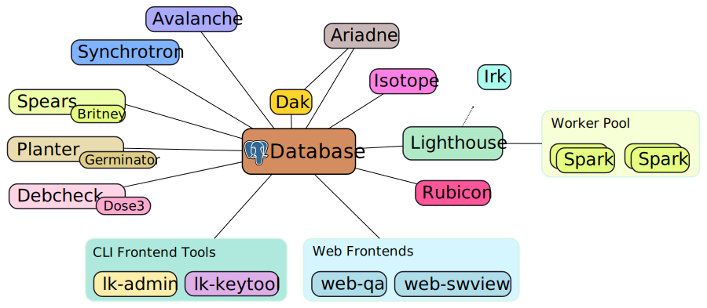

Welcome
Welcome to the Laniakea documentation!
Laniakea is a software suite to manage Debian derivatives. It integrates tightly with dak, the Debian Archive Kit.
Laniakea is built using experience from prior solutions used to maintain the Tanglu Debian derivative, which uses a full
fork of the Debian archive and therefore needed to replicate a large portion of Debian's own infrastructure, including
multiple QA tools.
This software is currently in early development.
Laniakea is based on the following principles:
- Have one source for all configuration
- Integrate components tightly, by making them speak the same protocols
- Minimize human interventions when maintaining a derivative
- Allow to manage most (all?) functions via a web interface
- Fine-grained permissions for project members
- No shell script glue
- Reuse existing tools whenever possible, via wrappers
Its tasks include, but are not limited to:
- Synchronizing packages from the source distribution with the target derivative
- Migrating packages between suites using Britney2
- Building disk images for the derivative
- Validating installavility of packages
- Managing default package selections
- Building packages
- Automatically taking maintenance action on the archive (e.g. rebuilding packages)
- Propagate information between the archive repository, bugtrackers and other websites
- etc.
Laniakea uses a lot of tools already common in the workflow of a derivative's archive maintainer, but integrates them in a nice way.

Development
Laniakea is split into multiple parts which can act independently (but all speak the same protocols and share data). That way, more security-sensitive bits can also be isolated out and run on different machines.
At the moment, not much documentation for Laniakea exists, these pages are a work in progress.